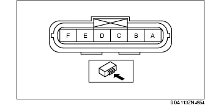

Throttle body inspection [ZY]
Resistance Inspection
1. Disconnect the negative battery cable.
2. Disconnect the throttle body connector.
3. Measure the resistance between throttle actuator terminals A and B.
- • If not as specified, replace the throttle body. (See INTAKE-AIR SYSTEM REMOVAL/INSTALLATION [ZY].)
- • If as specified, carry out the "Circuit Open/Short Inspection".
Specification

Circuit Open/Short Inspection
1. Remove the PCM connector cover.
2. Disconnect the PCM connector. (See INTAKE-AIR SYSTEM REMOVAL/INSTALLATION [ZY].)
3. Inspect the following wiring harnesses for open or short (Continuity inspection).

Open circuit
- • If there is no continuity, the circuit is open. Repair or replace the wiring harness.
- - Throttle body terminal A and PCM terminal 2BF
- - Throttle body terminal B and PCM terminal 2BE
Short circuit
- • If there is continuity, the circuit is shorted. Repair or replace the wiring harness.
- - Throttle body terminal A and power supply
- - Throttle body terminal A and ground
- - Throttle body terminal B and power supply
- - Throttle body terminal B and ground